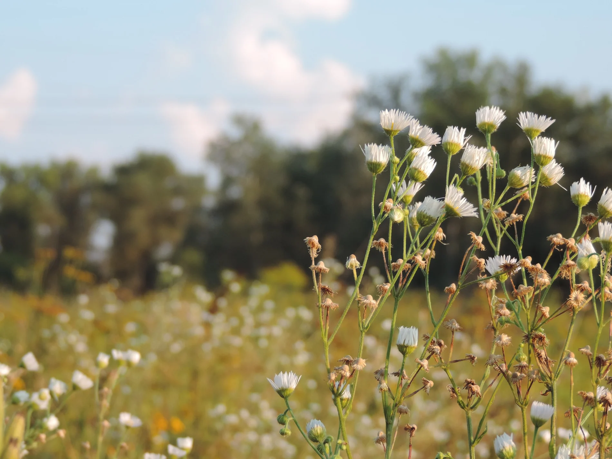

Herbal infusions
Aromatic flowers, leaves and selected seeds.
The scent of herbs. The colour of a harvest. The ingredients that bring your formulations to life. Discover Verdleaf’s Egyptian botanical collection.
Every ingredient has a story, from the plant that grows to the form that reaches a manufacturer's production line. Our collection begins with Egyptian agricultural know-how.
Discover our roots ↗
CHAMOMILE / BOTANICAL REFERENCEFrom aromatic leaves to bright flowers, seeds and dehydrated vegetables. Find the raw material your production needs.
View the full catalogue →Explore how commercial forms differ. These stylized illustrations explain physical form, not actual product-grade photographs.
Explore chamomile ↗Our story began in 1995, serving the Egyptian market. Today Verdleaf brings that agricultural experience to international buyers, with a practical approach to product forms and sourcing requirements.
Discover our story ↗Good sourcing starts with the right questions — before the quotation, before the shipment.
Plan a crop, check documentation or put together the details of your next shipment — all in one place.
Tell us where you need your ingredients delivered. Discuss commercial forms, destination and documentation with the export team.
Start sourcing ↗Tell us the ingredient, form and quantity. Our export team can discuss your specific requirements.
Browse the Verdleaf product range, search by name or application and build a sourcing shortlist.
Download original catalogue (PDF) ↗Verdleaf began as a family business supplying the local Egyptian market. Its range spans herbs, seeds, spices and aromatic ingredients, with organic and conventional options discussed according to the buyer’s needs.
Discover our rangeInterested in a business visit or meeting at an exhibition? Contact the team to arrange a suitable time.
Discuss product grade, intended use, certification scope and export documentation before confirming your purchase.
The existing company site displays organic certification marks. Ask for current certificates, scope and validity for your intended product and destination.
Explore indicative planting and harvest periods reported in an FAO regional study. Historical regional guidance, not Verdleaf's current farm schedule or stock availability.
Source: FAO regional study, tables 2–4, pp. 39–40.
Discuss current crop requirementsDiscuss a business visit, an exhibition appointment or a technical sourcing meeting with the export team.
Browse ingredients by intended use. Suitability, food safety requirements and grade must be confirmed for your specific application.
Aromatic flowers, leaves and selected seeds.

Herbs, spices and dehydrated plant ingredients.

Botanical ingredients for beverage development.
Select the forms and quantities you are interested in, compare requirements and prepare an email to the export team.
For product quotations, sample requests, current documentation, exhibitions and business visits.
El Mesla Square, Insurance Tower, first floor.
Original company website ↗